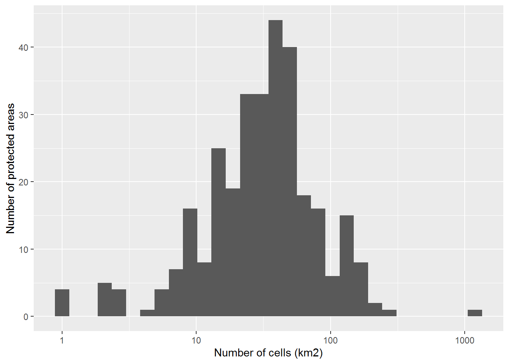

Given the EEA reference grid of Belgium at 1km resolution and the Belgian Natura2000 protected areas, this document assesses the cells covering the protected areas.
library(tidyverse)
library(tidylog)
library(sf)
library(here)We import UTM grid data of Belgium at 1 by 1 km resolution. All grids have CRS (Coordinate Reference System) equal to Belge Lambert 1972:
be_grid <- st_read(here::here("data", "external", "utm1_bel"))## Reading layer `be_1km' from data source `C:\Users\damiano_oldoni\Documents\INBO\repositories\pipeline\data\external\utm1_bel' using driver `ESRI Shapefile'
## Simple feature collection with 51726 features and 3 fields
## geometry type: POLYGON
## dimension: XY
## bbox: xmin: 3768000 ymin: 2926000 xmax: 4080000 ymax: 3237000
## CRS: 3035be_grid_crs <- st_crs(be_grid)
be_grid_crs## Coordinate Reference System:
## User input: 3035
## wkt:
## PROJCS["ETRS89 / ETRS-LAEA",
## GEOGCS["ETRS89",
## DATUM["European_Terrestrial_Reference_System_1989",
## SPHEROID["GRS 1980",6378137,298.257222101,
## AUTHORITY["EPSG","7019"]],
## TOWGS84[0,0,0,0,0,0,0],
## AUTHORITY["EPSG","6258"]],
## PRIMEM["Greenwich",0,
## AUTHORITY["EPSG","8901"]],
## UNIT["degree",0.01745329251994328,
## AUTHORITY["EPSG","9122"]],
## AUTHORITY["EPSG","4258"]],
## UNIT["metre",1,
## AUTHORITY["EPSG","9001"]],
## PROJECTION["Lambert_Azimuthal_Equal_Area"],
## PARAMETER["latitude_of_center",52],
## PARAMETER["longitude_of_center",10],
## PARAMETER["false_easting",4321000],
## PARAMETER["false_northing",3210000],
## AUTHORITY["EPSG","3035"],
## AXIS["X",EAST],
## AXIS["Y",NORTH]]GIS data of protected areas as defined in Natura2000 can be found on related webpage of European Environment Agency. We downloaded the GIS data as shapefile in folder data/external/protected_aras_natura2000_20190528:
path_natura2000 <- here::here(
"data",
"external",
"protected_areas_natura2000_20190528"
)
if (!file.exists(path_natura2000)) {
temp <- tempfile()
download.file(
"http://ftp.eea.europa.eu/www/natura2000/Natura2000_end2018_Shapefile.zip",
temp
)
unzip(temp, exdir = path_natura2000)
unlink(temp)
}We read the shapefile:
protected_areas <- st_read(path_natura2000)## Reading layer `Natura2000_end2018_epsg3035' from data source `C:\Users\damiano_oldoni\Documents\INBO\repositories\pipeline\data\external\protected_areas_natura2000_20190528' using driver `ESRI Shapefile'
## Simple feature collection with 27856 features and 5 fields
## geometry type: MULTIPOLYGON
## dimension: XY
## bbox: xmin: 746551.8 ymin: 905053.4 xmax: 6506130 ymax: 5298655
## CRS: 3035protected_areas_crs <- st_crs(protected_areas)Check whether grid and protected areas have same CRS:
be_grid_crs == protected_areas_crs## [1] TRUEWe are interested in protected areas in Belgium:
protected_areas <-
protected_areas %>%
filter(MS == "BE")## filter: removed 27,546 rows (99%), 310 rows remainingSummary by site type:
protected_areas %>%
as_tibble() %>%
group_by(SITETYPE) %>%
count()## group_by: one grouping variable (SITETYPE)## count: now 3 rows and 2 columns, one group variable remaining (SITETYPE)Bird directive areas (SPA areas) are defined as the areas with SITETYPE: A and C.
protected_areas_bird <-
protected_areas %>%
filter(SITETYPE %in% c("A", "C"))## filter: removed 55 rows (18%), 255 rows remainingHabitat directive areas (SAC areas) are defined as the protected areas with SITETYPE values B and C.
protected_areas_habitat <-
protected_areas %>%
filter(SITETYPE %in% c("B", "C"))## filter: removed 29 rows (9%), 281 rows remainingIntersect cells of the grid and protected areas:
grid_intersects_areas <- st_intersects(be_grid, protected_areas,
sparse = FALSE
)
grid_intersects_areas <- as_tibble(grid_intersects_areas,
.name_repair = "universal"
)## New names:
## * `` -> ...1
## * `` -> ...2
## * `` -> ...3
## * `` -> ...4
## * `` -> ...5
## * ...# Assign column names based on protected areas code
prot_areas_sitecode <- as.character(droplevels(protected_areas$SITECODE))
names(grid_intersects_areas) <- prot_areas_sitecode
# Add 1x1km grid cellcode as new column
grid_intersects_areas <-
grid_intersects_areas %>%
mutate(CELLCODE = as.character(droplevels(be_grid$CELLCODE))) %>%
select(CELLCODE, everything())## mutate: new variable 'CELLCODE' with 51,726 unique values and 0% NASelect cells which intersect any of the protected areas:
cells_protected <-
grid_intersects_areas %>%
filter_at(vars(starts_with("BE")), any_vars(. == TRUE))## filter_at: removed 38,988 rows (75%), 12,738 rows remainingFor each protected area we can get the list of intersecting cells:
cells_of_prot_areas <-
map_dfr(
prot_areas_sitecode,
function(pa_cell_code) {
site_type <-
protected_areas %>%
dplyr::filter(SITECODE == pa_cell_code) %>%
dplyr::pull(SITETYPE)
cells <-
cells_protected %>%
# avoid long logs by using dplyr functions instead of tidylog
dplyr::select(CELLCODE, !!sym(pa_cell_code)) %>%
dplyr::filter(!!sym(pa_cell_code) == TRUE) %>%
dplyr::mutate(
SITECODE = pa_cell_code,
SITETYPE = as.character(droplevels(site_type))
) %>%
dplyr::select(SITECODE, SITETYPE, CELLCODE)
}
)For example, grid cells intersecting protected area BE1000003:
cells_of_prot_areas %>%
filter(SITECODE == "BE1000003")## filter: removed 14,806 rows (>99%), 8 rows remainingDistribution of the number of cells covering the protected areas:
cells_of_prot_areas %>%
group_by(SITECODE) %>%
count() %>%
arrange(desc(n)) %>%
ggplot() +
geom_histogram(aes(x = n), bins = 30) +
scale_x_log10() +
xlab("Number of cells (km2)") +
ylab("Number of protected areas")## group_by: one grouping variable (SITECODE)## count: now 310 rows and 2 columns, one group variable remaining (SITECODE)
We can now define whether a cell of the reference grid interesects a protected area as defined by Natura2000. We add this information in column natura2000:
cellcode_protected_natura2000 <-
cells_protected %>%
as_tibble() %>%
pull(CELLCODE)
be_grid_membership_protected_areas <-
be_grid %>%
mutate(natura2000 = ifelse(CELLCODE %in% cellcode_protected_natura2000,
TRUE,
FALSE
))## mutate: new variable 'natura2000' with 2 unique values and 0% NAWe add also a column, spa, assessing whether the cell intersects a SPA area:
cells_protected_spa <-
cells_protected %>%
select(
CELLCODE,
one_of(as.character(protected_areas_bird$SITECODE))
) %>%
filter_at(vars(starts_with("BE")), any_vars(. == TRUE)) %>%
as_tibble() %>%
pull(CELLCODE)## select: dropped 55 variables (BE2200043, BE2100017, BE2200032, BE2100024, BE2400008, …)## filter_at: removed 3,387 rows (27%), 9,351 rows remainingbe_grid_membership_protected_areas <-
be_grid_membership_protected_areas %>%
mutate(spa = ifelse(CELLCODE %in% cells_protected_spa,
TRUE,
FALSE
))## mutate: new variable 'spa' with 2 unique values and 0% NAWe add also a column, habitat, assessing whether the cell intersects a habitat directive area:
cells_protected_hab <-
cells_protected %>%
select(
CELLCODE,
one_of(as.character(protected_areas_habitat$SITECODE))
) %>%
filter_at(vars(starts_with("BE")), any_vars(. == TRUE)) %>%
as_tibble() %>%
pull(CELLCODE)## select: dropped 29 variables (BE2500121, BE2101437, BE2219312, BE2500831, BE2100323, …)## filter_at: removed 904 rows (7%), 11,834 rows remainingbe_grid_membership_protected_areas <-
be_grid_membership_protected_areas %>%
mutate(habitat = ifelse(CELLCODE %in% cells_protected_hab,
TRUE,
FALSE
))## mutate: new variable 'habitat' with 2 unique values and 0% NAHow many cells contain/intersect protected areas?
be_grid_membership_protected_areas <-
be_grid_membership_protected_areas %>%
as_tibble()
be_grid_membership_protected_areas %>%
group_by(natura2000) %>%
count()## group_by: one grouping variable (natura2000)## count: now 2 rows and 2 columns, one group variable remaining (natura2000)How many cells contain/intersect SPA areas?
be_grid_membership_protected_areas %>%
group_by(spa) %>%
count()## group_by: one grouping variable (spa)## count: now 2 rows and 2 columns, one group variable remaining (spa)How many cells contain/intersect habitat directive areas?
be_grid_membership_protected_areas %>%
group_by(habitat) %>%
count()## group_by: one grouping variable (habitat)## count: now 2 rows and 2 columns, one group variable remaining (habitat)We save be_grid_membership_protected_areas as tab-separated file (tsv):
write_tsv(be_grid_membership_protected_areas,
path = here::here(
"data",
"interim",
"intersect_EEA_ref_grid_protected_areas.tsv"
),
na = ""
)We also save cells_of_prot_areas in same format:
write_tsv(cells_of_prot_areas,
path = here::here(
"data",
"interim",
"EEA_ref_grid_cells_covering_protected_areas.tsv"
),
na = ""
)We are also interested in saving basic information about protected areas:
protected_areas_metadata <-
protected_areas %>%
st_drop_geometry() %>%
select(SITECODE, SITENAME, SITETYPE)## select: dropped 2 variables (RELEASE_DA, MS)protected_areas_metadataWe save these metadata:
protected_areas_metadata %>%
write_tsv(
path = here::here(
"data",
"interim",
"protected_areas_metadata.tsv"
),
na = ""
)